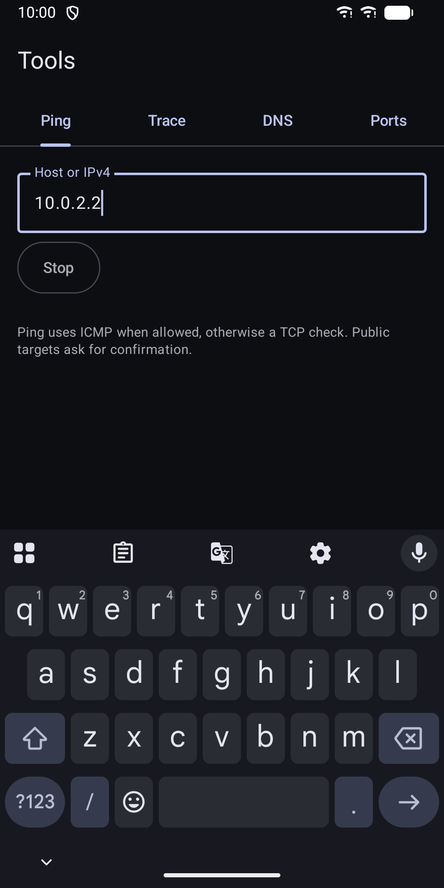
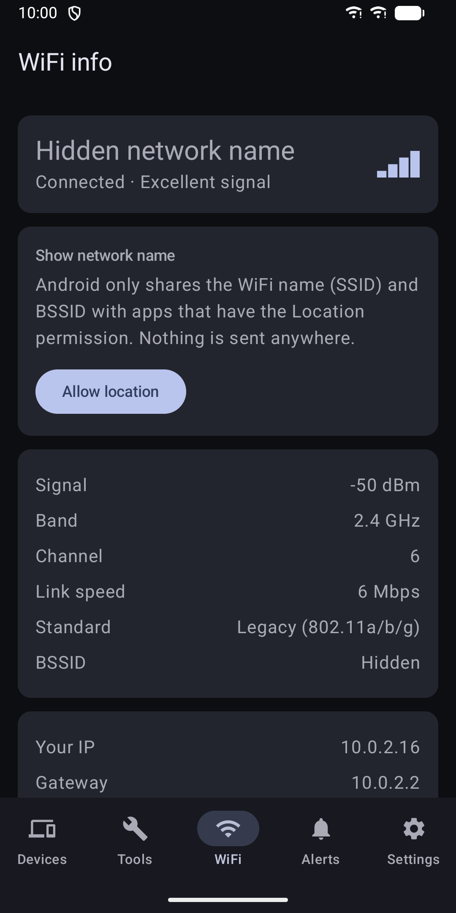

WiFi Scanner & Network Tools
See who is on your WiFi. Ping, traceroute, DNS lookup and port checks.








About
Who is on my WiFi? Why does it feel slow? WiFi Scanner & Network Tools helps you find out, and keeps the results on your phone. DEVICES ON YOUR NETWORK - Scan your home network and see every device that answers - Names come from mDNS, UPnP/SSDP, NetBIOS and your router, plus a built-in vendor database - Give devices your own names and mark them trusted or suspicious - Devices seen for the first time are flagged, so unknown ones stand out - Search, filter and sort the list NETWORK TOOLS - Ping with a latency chart. If ICMP is blocked, the app uses a TCP check instead - Traceroute - DNS lookup: A, AAAA and reverse PTR records - Port scan with presets or your own ports, up to 1024 per run - Tools default to your local network. Public addresses ask for confirmation first WIFI INFO - Network name, signal strength, band, channel, link speed and WiFi standard - Your IP address, gateway, DNS server and subnet HOME SCREEN WIDGET - Device count and last scan time at a glance PRO (ONE PURCHASE IN THE APP) - New-device alerts when you join WiFi and about every 15 minutes - Device history: see when each device was online - Export reports as CSV or PDF, saved where you choose Scanning, device names, trust marks, WiFi info and all tools work without a purchase. You can restore Pro on any device signed in with the same Google account. PRIVACY - No account, no ads, no analytics, no tracking - Device lists stay on your phone and are excluded from cloud backup - Nothing is uploaded. Only Google Play is contacted, to handle the Pro purchase - Exports happen only when you ask, to a place you pick - Settings has a Delete all data option LIMITS - Scans IPv4 /24 networks, such as 192.168.1.0/24. No IPv6. Not made for work networks - Android 10 and later hide MAC addresses from apps, so devices are matched by name where possible. Devices with a random MAC may show up as new when they rejoin - Background checks run about every 15 minutes or later. Battery saver and some phone makers can delay or stop them, and a device that joins and leaves between checks can be missed - The WiFi name needs the Location permission. This is an Android rule. The app does not use or store your location Works in light and dark mode, on phones and tablets, with TalkBack. Only scan networks and hosts you are allowed to test.
Guides
- Common Network Ports List and What They Mean A list of common TCP ports on home networks, what each service does, and how to check which ports a device has open on your own network.
- WiFi Channel and Frequency Chart (2.4, 5, 6 GHz) Convert a WiFi frequency in MHz to its channel number, with a chart for 2.4, 5 and 6 GHz and how to pick a channel.
- WiFi Signal Strength Chart (dBm to Signal Quality) What WiFi dBm values mean, from -30 to -100 dBm. A chart, a quick lookup tool and what to do when your signal is weak.